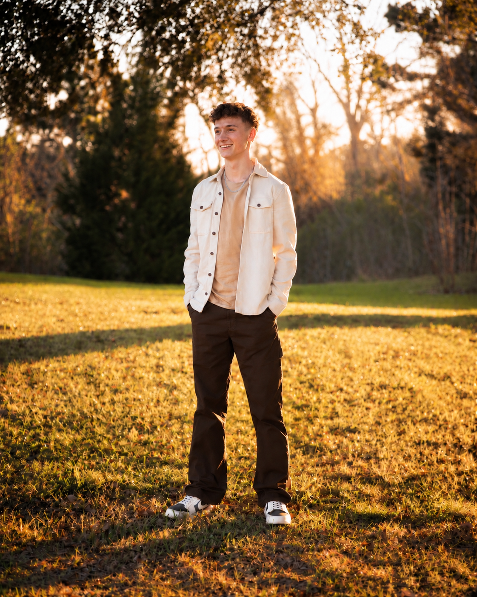

NATHAN LOWREY / ENGINEERING PORTFOLIO
About Me.
Driven by competition. Motivated by challenges. Committed to growth.
01 / MY STORY
I've always been competitive. Whether I'm on the basketball court, working as an electrical apprentice, or tackling an engineering problem, I've never been someone who enjoys settling for second best. I like to challenge myself, and when I come across something I'm not good at, I make it a point to change that.
I've always been drawn to solving problems. I enjoy the challenge of figuring things out, especially when the solution isn't immediately obvious. I don't expect to get everything right the first time, but I've learned that some of my greatest growth comes from my hardest failures. For me, failure isn't a reason to stop. It's an opportunity to figure out what needs to change and come back better.
That's a big part of why I love engineering. It's a field that constantly challenges me to think differently, learn new skills, and push beyond what I already know. There's always something to improve, something to understand, or another problem waiting to be solved.
I'm currently studying Electrical Engineering at Lamar University, with a growing interest in aerospace engineering. Through my coursework, hands-on experience, and involvement in engineering organizations, I'm continuing to explore the different directions my career could take.
Ultimately, I want to become one of the best at what I do. I'm motivated by the opportunity to compete, to master my craft, and to continually raise my own standards. Whatever area of engineering I pursue, I want to be someone who can take on difficult problems, find effective solutions, and make a meaningful contribution through my work.
02 / AT A GLANCE

Nathan Lowrey
Electrical Engineering Student · Licensed Apprentice Electrician
- EDUCATION
- Lamar University · Reaud Honors College
- DEGREE
- B.S. Electrical Engineering — In Progress
- TRADE EXPERIENCE
- Licensed Apprentice Electrician · Residential Electrical Work
- INTERESTS
- Aerospace · Electrical Systems · Engineering Design
03 / PROFESSIONAL EXPERIENCE
Professional Experience.
Apprentice Electrician
IZCO Electrical Services · Residential electrical work
Gained hands-on experience with residential electrical installations, including wiring, electrical boxes, receptacles, switches, and testing. Working alongside experienced electricians helped me connect classroom concepts with practical installation and troubleshooting.